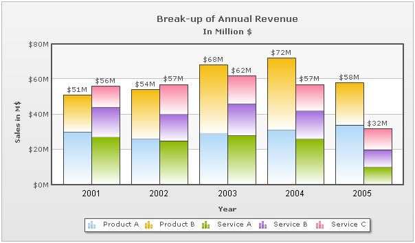
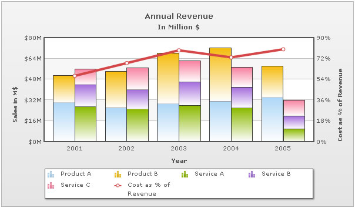

| Multi-series stacked Chart XML |
Multi-series stacked charts are useful when you have to show clustered stacked columns per x-axis category. An example is shown below: |
|  |
The XML looks as under: |
<chart caption='Break-up of Annual Revenue' subcaption='In Million $' xaxisname='Year' |
| Brief Explanation |
The XML structure of multi-series stacked chart is similar to that of a normal multi-series chart except for a few elements. Since multi-series stacked charts have multiple stacked columns category, all the series which form one stacked column are grouped together using nested dataset. This is done for each such cluster of stacked columns. For example, in the above chart, we have two stacked dataplots in each category. The first dataplot comprises of two data series with series name Product A and Product B. So the XML of the first dataplot represents one dataset with two nested datasets each with series name Product A and Product B respectively. |
| Multi-series stacked Column chart with Line dataset |
An example of a Multi-series Stacked Column 2D Line Dual Y Combination Chart is given below: |
|  |
The XML of the above chart looks as under: |
<chart caption='Annual Revenue' subcaption='In Million $' xaxisname='Year' PYaxisname='Sales in M$' |
| Brief Explanation |
The XML structure of multi-series Stacked Column 2D Line Dual Y Combination Charts is similar to that of a multi-series Stacked Column 2D Chart with the addition of the <lineset> element. There can be multiple <lineset> elements per chart, each indicating a series of line to be plotted over column chart. Also, since this chart has dual y-axis, you will need to configure the titles, limits, number formatting and prefix and suffix for each axis separately. |